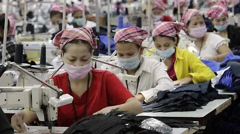

En el aspecto
Social
Sabemos que detrás del "Fast Fashion" hay muchas injusticias, desde explotación laboral, hasta toneladas de ropa en la basura. Por eso, en Lunara no solo vendemos ropa, contamos historias, educamos y fomentamos una forma de vestir más consciente. de la misma forma queremos para fomentar el apoyo a emprendedores locales.